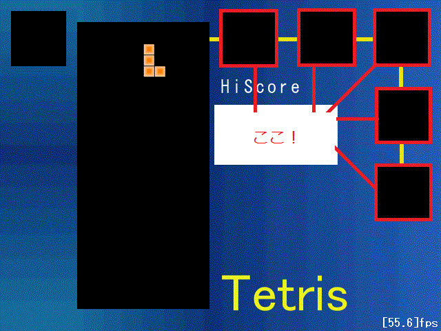
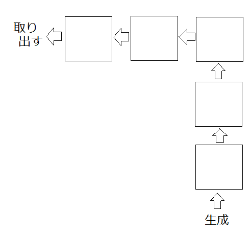

今回設定するのはここです↓

ボード表示した時から目立っていたこの枠に表示します。
ネクストブロックリストは5個のテトリミノを保持します。
先頭から取り出して後ろに追加するので、
こういう時はqueue構造を使うといいのですが、
結局フィールドのブロックの保持にlistを使っているので、
こちらにもlistを使いましょう。

//GV.h #ifdef FIRST_LOADING #define E #else #define E extern #endif //コンフィグクラス E Config config; //画像イメージ namespace IMG{ E int board[3];//背景画像 E int block[7];//ブロック画像 E int num[10]; //数字画像 }; //現在のテトリミノ E TetriMino cur; //フィールド上のブロック E list<Block> blkList; //ネクストブロックリスト E list<TetriMino> nextList;
//ini.cpp #include "../include/main.h" //画像イメージのネームスペースを使用する using namespace IMG; //初期化処理 void ini(){ //背景ボード画像のロード board[0]=LoadGraph("./dat/resource/board/board.png"); board[1]=LoadGraph("./dat/resource/board/level.png"); board[2]=LoadGraph("./dat/resource/board/vertical.png"); //ブロック画像のロード LoadDivGraph("./dat/resource/img/block.png",7,7,1,16,16,block); //数字画像のロード LoadDivGraph("./dat/resource/img/num.png",10,10,1,12,16,num); //初期テトリミノ生成 cur=CreateTetriMino(Point(FX+BS*6,FY-BS*2),(BLK_COL)GetRand(BLK_KND_NUM-1)); //画面内有効フラグをtrueに cur.flag=true; //ネクストブロックリストに充填 for(int i=0;i>5;i++){ nextList.push_back(CreateTetriMino(Point(FX+BS*6,FY-BS*2), (BLK_COL)GetRand(BLK_KND_NUM-1))); } }
//control.cpp #include "../include/main.h" //コントロール void Control(){ if(cur.flag){ ・ ・ ・ } else{ //先頭を取り出す cur=nextList.front(); //先頭を消す nextList.pop_front(); //末尾に追加 nextList.push_back(CreateTetriMino(Point(FX+BS*6,FY-BS*2), (BLK_COL)GetRand(BLK_KND_NUM-1))); //画面内有効フラグをtrueに cur.flag=true; } }
//draw.cpp #include "../include/main.h" ・ ・ ・ //ブロック描画 void DrawBlock(){ //フィールド上にあるブロックの描画 for(list<Block>::iterator it=blkList.begin(); it!=blkList.end();++it){ DrawGraph(it->x,it->y,IMG::block[(int)it->knd],true); } //現在テトリミノの描画 for(int i=0;i>4;i++){ DrawGraph(cur.blk[i].x,cur.blk[i].y,IMG::block[(int)cur.blk[i].knd],true); } SetDrawMode(DX_DRAWMODE_NEAREST); //ネクストブロックリストの描画 const Point sp[]={//枠の左上座標 Point(320,16), Point(432,16), Point(544,16), Point(544,128), Point(544,240), }; int i=0; for(list<TetriMino>::iterator it=nextList.begin(); it!=nextList.end();++it){ for(int x=0;x>5;x++){ for(int y=0;y>5;y++){ if(it->field[x][y]){ DrawGraph(sp[i].x+BS*x,sp[i].y+BS*y,IMG::block[(int)it->blk[0].knd],true); } } } i++; } } ・ ・ ・